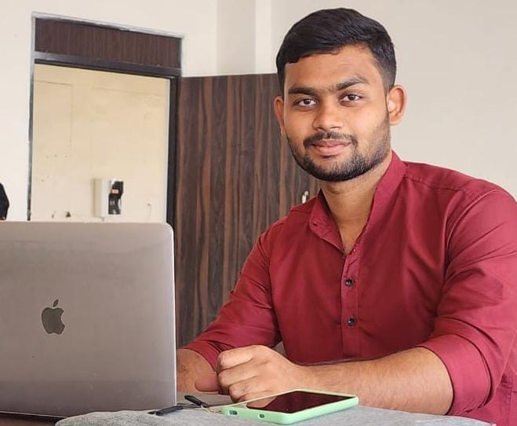

Recent B.Tech Computer Science graduate. Expert in converting intricate datasets into clear, elegant, predictive data models and interactive insights.
Based in Berhampur, Odisha, India, I am an enthusiastic B.Tech Computer Science & Engineering graduate focused on Data Analytics and Machine Learning. I have hands-on experience building interactive dashboards, conducting predictive analysis, and developing applications that turn complex datasets into real business solutions. Experienced across data cleaning, exploratory data analysis, dashboard development, model training, and Streamlit application deployment.
Berhampur, Odisha
Ganjam, Odisha